Mikro İktisat
A. EĞİM
-
Bağımsız değişkenin bir birim arttırılmasıyla bağımlı değişkenin kaç birim değişeceğini anlatır.
\[m = \frac{\Delta y}{\Delta x} = \frac{y_{2} - y_{1}}{x_{2} - x_{1}}\]
-
Doğrusal fonksiyonlarda (yani X’in üssü 1 ise) katsayı eğimi verir.
-
Bir doğru dikleştikçe eğimi artmaktadır.
-
Eğimi bulmak için grafikteki doğrulara teğetler çizmek gereklidir.
1. Negatif Eğimli Eğriler
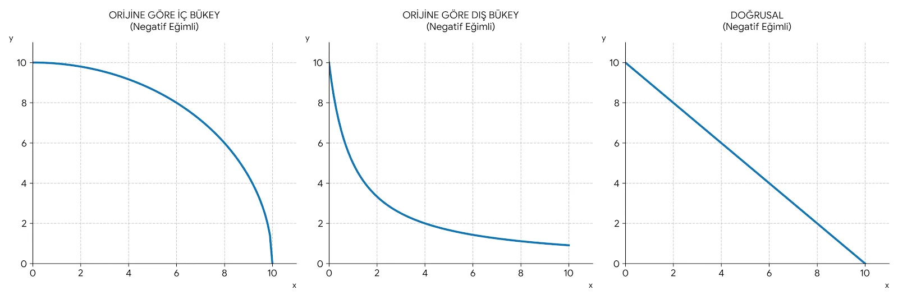
2. Pozitif Eğimli Eğriler
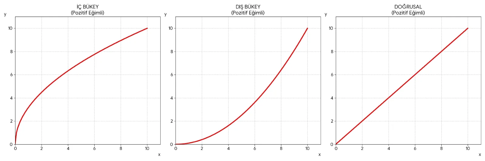
B. TOPLAM, MARJİNAL VE ORTALAMA
1. Marjinal
-
Miktarın 1 birim arttırılmasıyla toplamda ortaya çıkan değişimdir.
-
İktisatta eğimin karşılığıdır.
-
Yani en sonuncu birimin katkısı anlamında gelir.
-
Türev ile bulunur.
\[M = \frac{dT}{dQ}\]
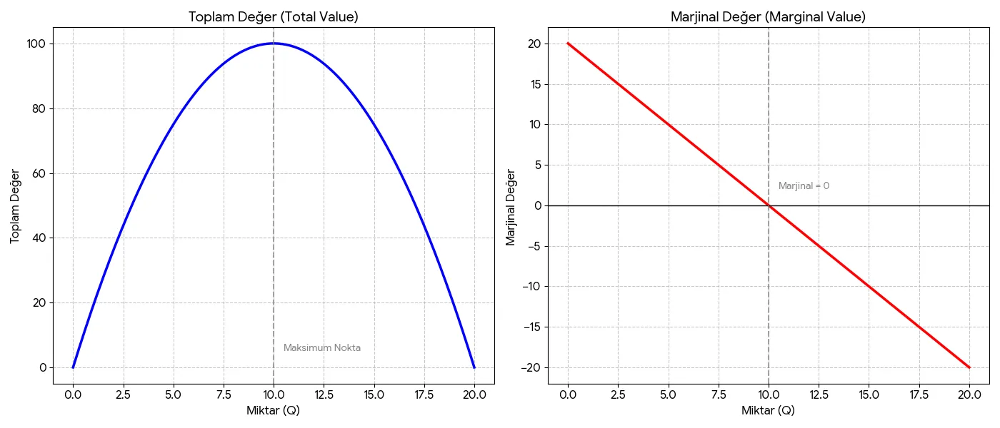
2. Ortalama
-
Bağımsız değişken başına düşen değeri ifade eder.
-
Orijinden çıkan doğrunun yatay eksenle yaptığı açının tanjantıdır.
\[A = \frac{\text{Toplam}}{\text{Miktar}}\]
C. KARDİNALİST TÜKETİM KURAMI
Faydanın ölçülebileceğini öne sürmektedirler.
1. Toplam Fayda (Total Utility, TU):
-
Bir malın tüketilen tüm birimlerinin faydalarının toplamıdır.
-
En az iki kere türevi alınabilir, yani doğrusal değildir.
\[TU = f(Q)\]
-
Toplam fayda azalarak artandır.
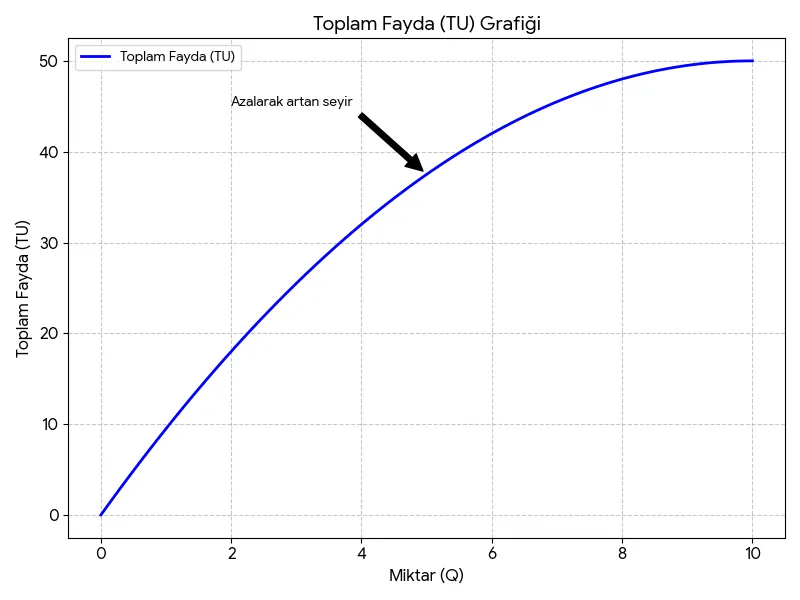
2. Marjinal Fayda (Marginal Utility, MU):
-
Tüketimin bir birim artmasıyla toplam faydada meydana gelen değişimdir.
-
Yani son birim faydasıdır.
\[MU = \frac{dTU}{dQ} = \frac{\Delta TU}{\Delta Q}\]
-
Marjinal fayda azalandır
-
Marjinal fayda sıfırken toplam fayda maksimumdur. Buna “doyum noktası” denir.
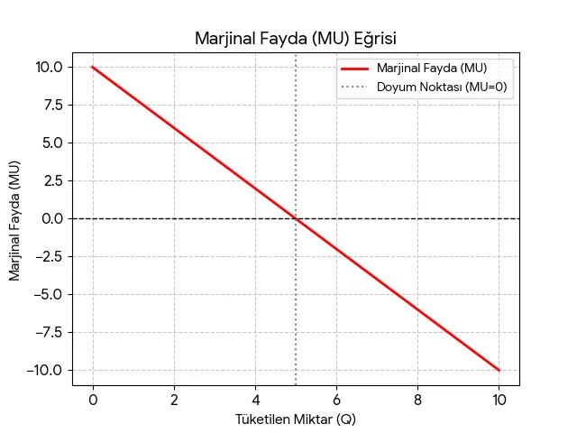
3. Azalan Marjinal Fayda Yasası (Gossen 1 )
-
Tüketilen miktar arttıkça marjinal fayda azalır ve toplam fayda artar.
-
Bu yasaya uymayan durumlara ise “atipik durumlar” denir.
D. ORDİNALİST TÜKETİM KURAMI
Faydanın ölçülemeyeceğini ancak sıralanabileceğini öne sürmektedirler.
1. Farksızlık Eğrisi (Kayıtsızlık – Eş Fayda Eğrisi)
-
Bir tüketicinin tükettiği iki farklı mal bileşiminin yer aldığı ve bu bileşimlerin her birinin tüketiciye tamamen aynı toplam fayda (memnuniyet) düzeyini sağladığı noktaların geometrik yeridir.
-
Buna göre tüketici bir malın tüketimini arttırırken diğerini azalttığı için fayda aynı kalmaktadır.
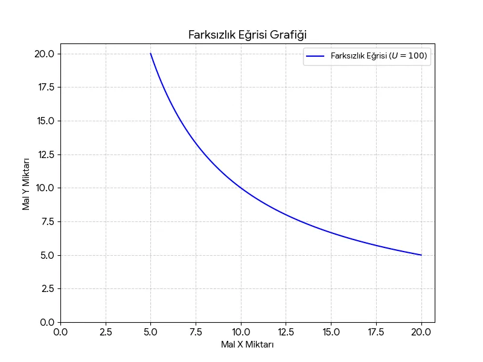
Özellikleri şunlardır:
-
Üzerindeki her noktada fayda aynıdır.
-
Ancak mallar ve eğimler farklıdır.
-
Bu nedenle mallar ikamedir.
-
-
Birden fazla farksızlık eğrisi olabilmektedir.
-
Bu eğriler orijinden uzaklaştıkça TU artar.
-
-
Farksızlık eğrileri birbirlerini kesmezler
-
Çünkü kestiklerin takdirde tüketicinin tutarlılık (geçişkenlik) ilkesi ihlal edilmiş olur.
-
-
Negatif eğimlidir.
-
Orijine göre dış bükeydir.
-
Tüketicinin aynı fayda düzeyini korurken bir malın tüketimini artırdıkça diğer maldan vazgeçmeye razı olduğu miktarın giderek azalmasını ifade eden “Azalan Marjinal İkame Oranı” ilkesidir.
-
2. Marjinal İkame Oranı (Marginal Rate of Substitution, MRS)
-
X ürününün tüketimi 1 birim arttırıldığında faydanın aynı kalabilmesi için vazgeçilen ya da tüketmesi gereken Y ürünün miktarıdır.
-
Farksızlık eğrisinin eğimidir.
\[MRS_{x,y} = - \frac{MU_{x}}{MU_{y}}\]
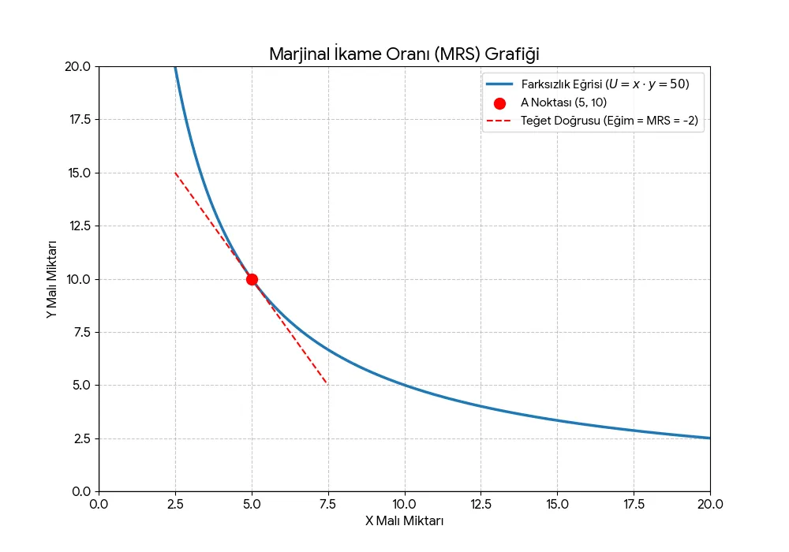
3. Cobb-Douglas Tipi Fayda Fonksiyonu
\(U = \ A\ \cdot X^{\alpha} \cdot Y^{\beta}\)
4. A Tipik Farksızlık Eğriler
-
Doğrusal Farksızlık Eğrileri (Tam İkame)
-
Mantık : Tüketici için X ve Y arasında hiçbir fark yoktur (Örn: İki farklı marka su).
-
Özellik : Marjinal İkame Oranı (MRS) sabittir.
-
Fonksiyon : \(U = aX\ + \ bY\)
-
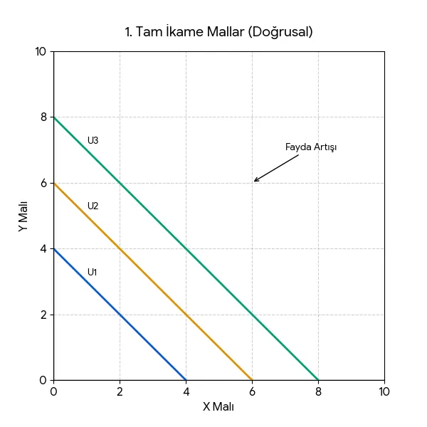
-
L Şeklinde Farksızlık Eğrileri (Tam Tamamlayıcı)
-
Mantık : Mallar sabit bir oranda, birlikte tüketilmek zorundadır (Örn: Sağ ve sol ayakkabı).
-
Özellik : Leontief fayda fonksiyonu geçerlidir.
-
Köşe noktaları dışında ikame yoktur.
-
Fonksiyon : \(U(x,y) = min(aX,bY)\)
-
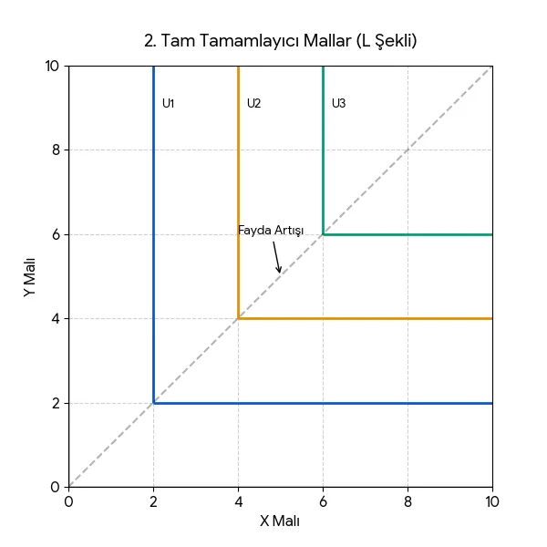
-
Pozitif Eğimli Eğriler (Kötü Mal)
-
Mallardan biri "kötü" (çöp, gürültü, risk), diğeri "iyi"dir.
-
Faydayı sabit tutmak için kötü malın artışı, iyi mal ile telafi edilmelidir.
-
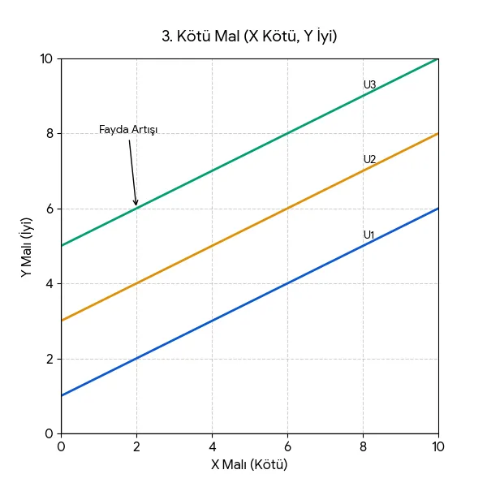
-
Dikey ve Yatay Eğriler (Nötr Mal)
-
Dikey : X fayda verir, Y nötrdür (faydayı etkilemez).
-
\[U(X,Y) = a \cdot X\]
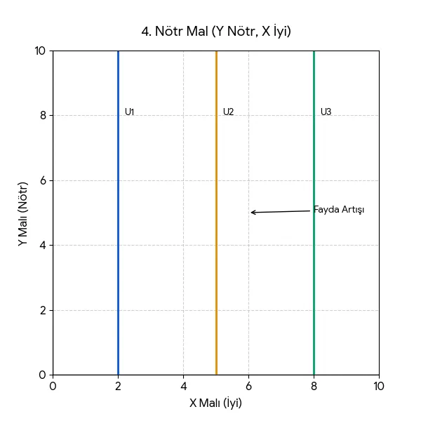
-
Yatay : Y fayda verir, X nötrdür.
\[U(X,Y) = b \cdot Y\]
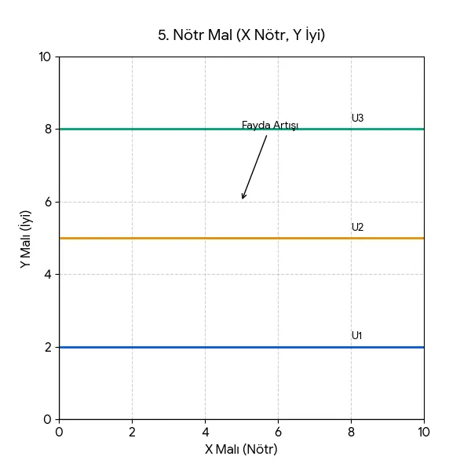
-
Özet : Farksızlık eğrisi, her zaman fayda veren (iyi) malın eksenine dik konumdadır.
-
Orijine Göre İç Bükey (Konkav) Eğriler
-
Mantık : Bağımlılık yaratan mallar veya uzmanlaşma isteği.
-
Özellik : MRS artandır.
-
Tüketici genelde sadece bir malı tüketmeyi (köşe dengesi) tercih eder.
-
Formül : \(U = aX^{n} + bY^{n}\)
-
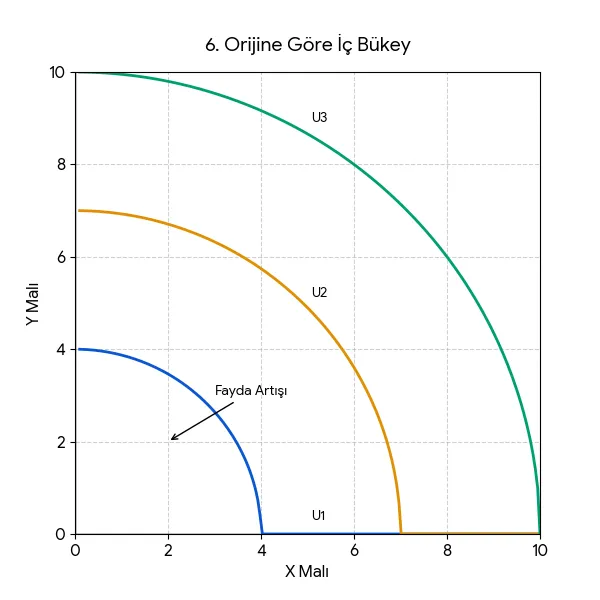
E. BÜTÇE DOĞRUSU
Tüketicinin mevcut bütçesi ile alabileceği mal miktarlarını gösteren eğridir.
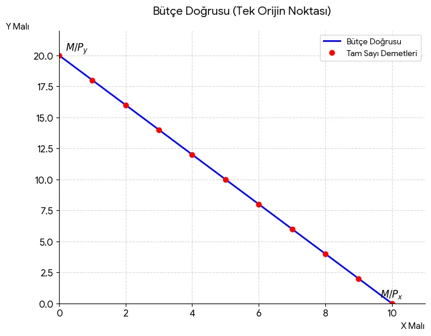
-
Alınabilecek maksimum X malı miktarı : \(X_{\max} = \frac{M}{P_{x}}\)
-
Alınabilecek maksimum Y malı miktarı : \(Y_{\max} = \frac{M}{P_{y}}\)
-
Bütçe doğrusunun eksenleri kestiği noktalara reel gelir denir.
1. Bütçe Doğrusunun Eğimi
\[\text{Eğim} = - \frac{P_{x}}{P_{y}}\]
2. Bütçe Denklemi (Kısıtı)
\[I = \left( P_{X} \cdot Q_{X} \right) + \left( P_{Y} \cdot Q_{Y} \right)\]
\[y = \frac{I}{P_{y}} - \left( \frac{P_{x}}{P_{y}} \right)Qx\]
-
Grafikte noktanın durumuna göre;
-
Üzerinde ise; gelir ve fiyatlar aynı ve sabittir.
-
İçinde ise; para artmıştır.
-
Dışında ise; para eksiktir.
-
3. Bütçe Doğrusunun Eğim ve Konumunun Değişmesi
-
Eğim Değişimi (Fiyat Değişimi)
-
Tek Malın Fiyatının Düşmesi (Px ↓): Dikey eksen sabit, yatay eksen dışa doğru döner. Doğru yatıklaşır.
-
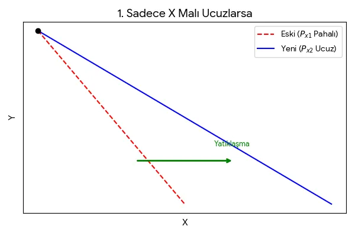
-
Orantısız Fiyat Artışı (Px ↑↑>Py ↑): Her iki eksen içeri daralır ama X ekseni daha fazla çekilir. Doğru dikleşerek içeri kayar.
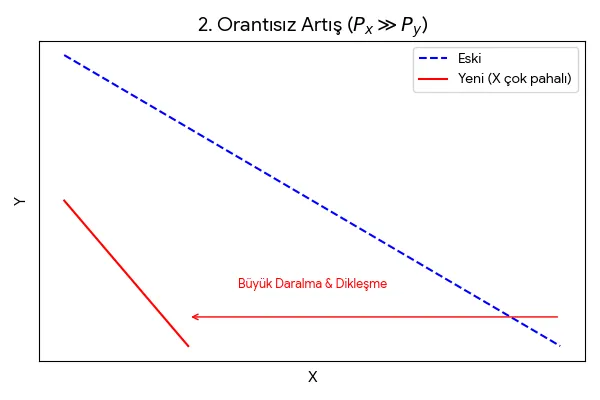
-
Ters Yönlü Değişim (Px ↓, Py ↑): X ekseni sağa, Y ekseni aşağı gider. Doğrular kesişir (makas hareketi). Doğru yatıklaşır.
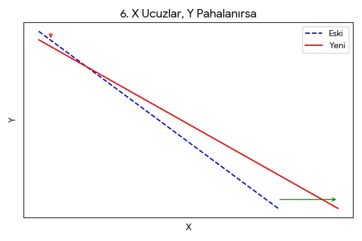
-
Gelir Değişimleri (Eğim Sabit Kalır)
-
Saf Gelir Artışı (M↑): Fiyatlar sabitken gelir artarsa doğru, paralel sağa kayar.
-
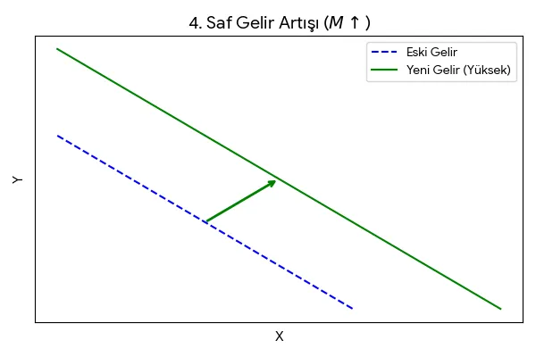
-
Reel Gelir Artışı (Gelir Artışı > Fiyat Artışı): Alım gücü arttığı için doğru, paralel sağa kayar (Nispi fiyatlar değişmediği sürece).
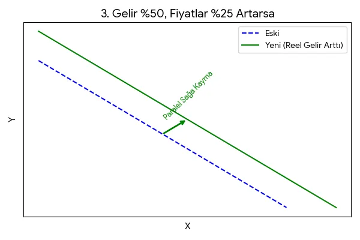
-
Özel Durumlar
-
Saf Enflasyon : Gelir ve tüm fiyatlar aynı oranda (örneğin % 100 ) artarsa; bütçe doğrusu hiç hareket etmez. Reel alım gücü değişmez.
-
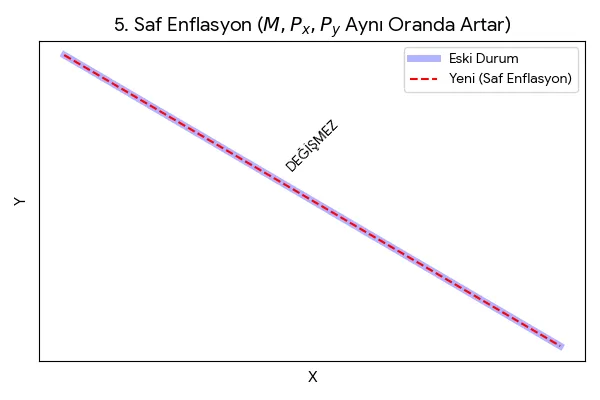
4. Mal Türleri
| Mal Türü | Gelir (M) Artarsa | Fiyat (P) Artarsa | Temel Mantık |
|---|---|---|---|
| Normal Mal | Talep Artar | Talep Azalır | Gelirle doğru, fiyatla ters orantılıdır. En yaygın mal grubudur. |
| Üstün (Lüks) Mal | Talep ÇOK Artar | Talep Azalır | Normal malın bir alt türüdür. Gelir artışından çok etkilenir. |
| Düşük (Fakir) Mal | Talep Azalır | Talep Azalır | Gelir artınca "terfi" edilir, daha kaliteli mala geçilir. Fiyat artınca her normal mal gibi talebi düşer. |
| Giffen Mal | Talep Azalır | Talep ARTAR | Düşük malın ekstrem halidir. Fiyatı artsa bile tüketicinin başka çaresi olmadığı için daha fazla alır. |
Soru :
Yatay eksende düşük malın, dikey eksende ise üstün malın olduğu bir grafikte tüketicinin geliri artarsa bütçe doğrusu nasıl değişir?
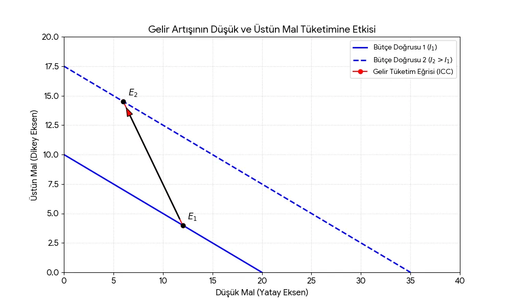
Cevap :
Bütçe Doğrusu: Tüketicinin geliri arttığında, her iki malın fiyatı sabitken satın alma gücü arttığı için bütçe doğrusu sağa paralel kayar.
Denge Noktası ( \(\mathbf{E}_{\mathbf{1}}\) ⇒ \(\mathbf{E}_{\mathbf{2}}\) ): Yeni denge noktası, yeni bütçe doğrusu üzerinde ancak eski konuma göre sola ve yukarı bir noktada oluşur.
Sola Kayma: Yatay eksendeki düşük malın miktarının azaldığını gösterir (Gelir etkisi negatiftir).
Yukarı Kayma: Dikey eksendeki üstün malın miktarının arttığını gösterir (Gelir etkisi pozitiftir).
Sonuç: Bu hareket, tüketicinin zenginleştikçe kalitesiz (düşük) malı, kaliteli (üstün) mal ile ikame ettiğini kanıtlar.
F. TÜKETİCİ DENGESİ (FAYDA MAKSİMİZASYONU)
-
Farksızlık eğrileri (tercihler) ile bütçe doğrusunun (imkanlar) bir araya gelmesidir.
-
Farksızlık eğrisi fayda bilgisin, bütçe doğrusu ise alınabilecek mal miktarı bilgisini verir.
-
Tüketici dengesi; bütçe doğrusunun, orijine en uzak (en dıştaki) farksızlık eğrisine teğet geçtiği noktadır.
-
Denge durumunda iki mal tükettiği için “dahili denge” denir.
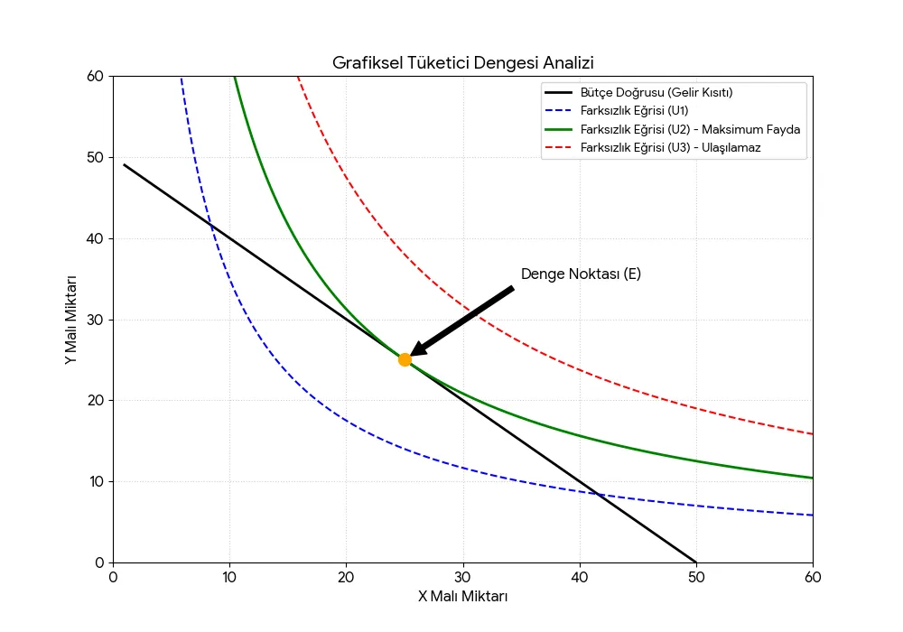
\[\text{Eğim}_{\text{Farksızlık}} = \text{Eğim}_{\text{Bütçe Doğrusu}}\]\[\begin{aligned} {MRS_{xy} = - \frac{P_{x}}{P_{y}} } \\[1.2em] {\frac{MU_{x}}{MU_{y}} = \frac{P_{x}}{P_{y}}\ } \end{aligned}\]
-
Burada iki temel kural ve varsayım mevcuttur:
-
Tüketici dengesinde, farksızlık eğrisinin eğimi (MRS), bütçe doğrusunun eğimine (fiyatlar oranına) eşit olmalıdır.
-
\[\frac{MU_{x}}{MU_{y}} = \frac{P_{x}}{P_{y}}\]
-
Tüketici, rasyonel olduğu için gelirinin tamamını harcamalıdır.
\[I = P_{x} \cdot X + P_{y} \cdot Y\]
Soru :
Bir tüketcinin fayda fonksiyonu \(U = X^{ 1 \text{/} 2 } \cdot Y^{ 1 \text{/} 4 }\) olarak verilmiştir. Tüketici bütçesi 120 TL, X malı fiyatı (Px) 4 TL, Y malı fiyatı (Py) 2 TL ise faydayı maksimize eden X ve Y miktarları nedir?
Çözüm :
Aşama 1 (Denge Koşulu): \(\ \frac{MU_{x}}{MU_{y}} = \frac{P_{x}}{P_{y}}\)
\[\frac{\frac{1}{2}X^{- 1\text{/}2}Y^{1\text{/}4}}{\frac{1}{4}X^{1\text{/}2}Y^{- 3\text{/}4}} = \frac{4}{2}\]
Sadeleştirme sonrası:
\[\frac{2Y}{X} = 2 \Rightarrow 2X = 2Y \Rightarrow X = Y\]
Aşama 2 (Bütçe Doğrusu):
\[M = P_{x} \cdot X + P_{y} \cdot Y\]
\[120 = \ 4X\ + \ 2Y\]
\(X = Y\) olduğu için: \(120\ = \ 4X\ + \ 2X\ \Rightarrow 6X\ = \ 120\)
Sonuç: \(X = 20,Y = 20\)
1. A Tipik Tüketici Dengesi
Her fayda fonksiyonunun ya da her farksızlık eğrisinin kendine ait bir denge koşulu vardır.
-
Doğrusal Farksızlık Eğrisinde Tüketici Dengesi
-
Temel Mantık : Doğrusal farksızlık eğrileri, malların birbirini tam ikame ettiği durumlarda görülür \((u = Ax + By)\) . Bu durumda Marjinal İkame Oranı (MRS) sabittir
-
Denge Durumları : Tüketici dengesi, farksızlık eğrisinin eğimi (MRS) ile bütçe doğrusunun eğiminin \((Px/Py)\) kıyaslanmasıyla bulunur:
-
\(\mathbf{MRS\ > \ Px/Py:}\) Farksızlık eğrisi daha diktir. Tüketici sadece X malı tüketir (Köşe Dengesi) .
-
-
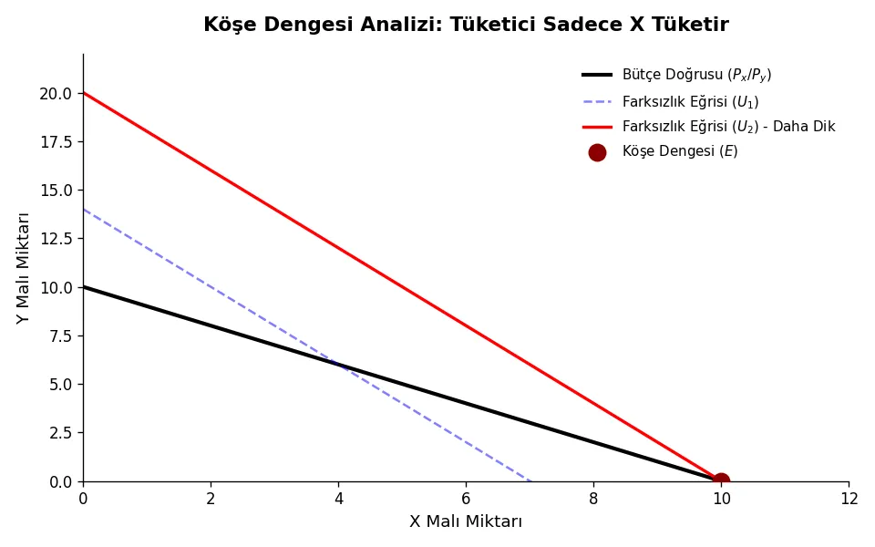
-
\(\mathbf{MRS\ < \ Px/Py}\) : Farksızlık eğrisi daha yatıktır. Tüketici sadece Y malı tüketir (Köşe Dengesi) .
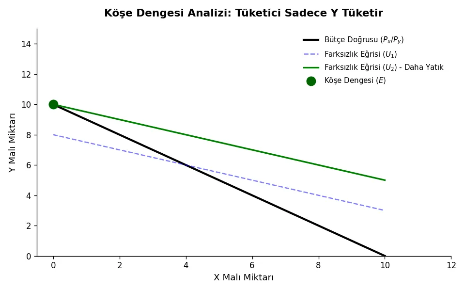
-
\(\mathbf{MRS\ = \ Px/Py}\) : Eğriler çakışır. Bütçe doğrusu üzerindeki her nokta dengedir.
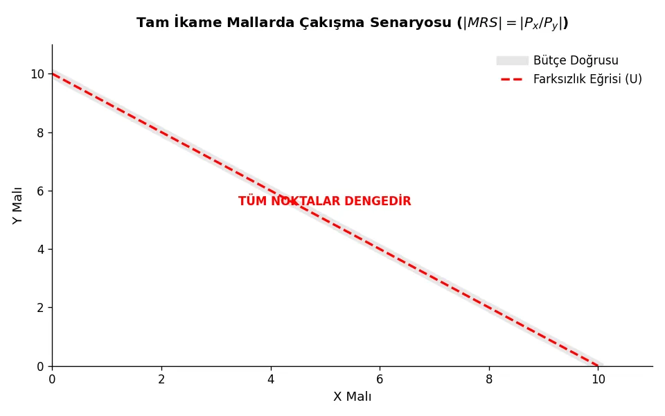
NOT : \(\ U = X + Y\ \) ise (katsayılar 1 ise) marjinal faydaları türev gereği 1 ’dir. Tüketici dengesi sorulursa sadece ucuz üründen alınır.
Soru 1:
Bir tüketici için marjinal ikame oranı, malların fiyat oranından büyüktür \(\left( {MRS}_{xy} > Px\text{/}Py \right)\). Bu durumla ilgili aşağıdakilerden hangisi doğrudur?
a) Tüketici faydasını maksimize etmiştir.
b) Tüketici sadece X malı tüketir.
c) Tüketici sadece Y malı tüketir.
d) Tüketici faydasını maksimize edememiştir.
e) Tüketici bütçe kısıtının dışındadır.
Doğru Cevap: D
Çözüm :
Sıradan Durum (Belirtilmemişse): Denge için \(MRS = Px/Py\) şarttır. Eğer \(MRS > Px/Py\) ise denge yoktur; tüketici dengeye gelmek için X’i artırıp Y’yi azaltmalıdır.
Tam İkame Durumu (Belirtilmişse): \(MRS > Px/Py\) ise "Köşe Dengesi" oluşur ve tüketici sadece X malı tüketerek faydasını maksimize eder.
Püf Noktası: Sorunun başında "tam ikame" ifadesi yoksa Cevap "denge yoktur"; varsa "sadece X tüketir" olur.
Soru 2:
Fayda Fonksiyonu \(U = X + Y\) ve tüketici bütçesi 120 TL, Px = 4 TL, Py = 2 TL ise faydayı maksimize eden X ve Y?
Çözüm :
Aşama 1 :
\[MRS = - \frac{MU_{x}}{MU_{y}} = - \frac{1}{1} \Rightarrow |MRS| = 1\]
Aşama 2 :
Fiyatlar oranı = \(\frac{P_{x}}{P_{y}} = \frac{4}{2} = 2\)
Aşama 3 (Kıyaslama):
\(MRS < \frac{P_{x}}{P_{y}}\) ( 1 < 2 ) olduğu için tüketici sadece ucuz olan malı (Y) alır.
\[y = \frac{M}{P_{y}} = \frac{120}{2} = 60\]
Sonuç: \(Y = 60,\ \ X = 0\) (Köşe Dengesi)
-
L Şeklinde Farksızlık Eğrisinde Tüketici Dengesi
-
Temel Mantık : Mal İlişkisi: X ve Y malları birbirini tam olarak tamamlayan mallardır \(\text{(}U = \min(Ax,By)\) . Leontief tipidir.
-
Denge Koşulu: Tüketici her zaman farksızlık eğrisinin "dirsek noktasında" dengeye gelir. Bu noktada parantez içindeki değerler birbirine eşittir. \(\text{(}Ax = By\text{)}\ \) ve bütçenin tamamı harcanır. Dahili dengedir.
-
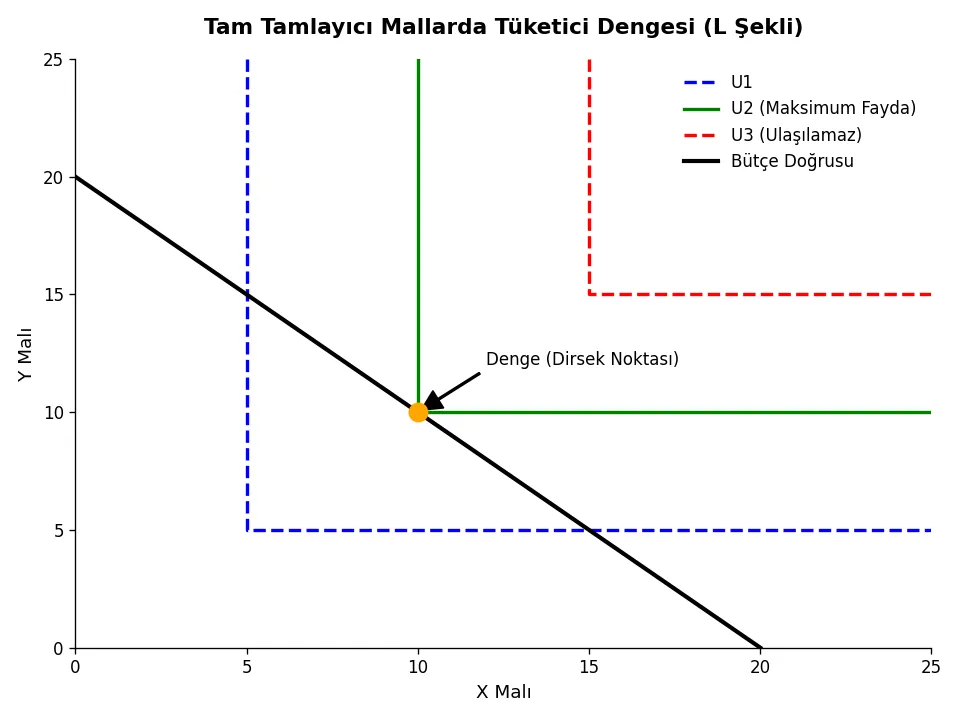
Örnek
Soru :
Bir tüketcinin fayda fonksiyonu \(U = \min(2X,Y)\ \) ve tüketici bütçesi 120 TL, Px = 4 TL, Py = 2 TL ise faydayı maksimize eden X ve Y miktarı nedir?
Çözüm :
Parantez içi eşitlenir:
\[2X\ = \ Y\]
Bütçe Doğrusu Yazılır:
\[M = P_{x} \cdot X + P_{y} \cdot Y120 = 4X + 2Y\]
Y yerine 2X yazılır: \(120 = 4X + 2(2X) \Rightarrow 120 = 8X\)
Sonuç: X = 15 , buradan Y = 2 ( 15 ) = 30
-
Orijine Göre İçbükey Farksızlık Eğrisinde Tüketici Dengesi
-
Temel Mantık:
-
Artan Marjinal İkame Oranı ( \(\mathbf{MR}\mathbf{S}_{\mathbf{xy}}\) ): Tüketici bir maldan daha fazla tükettikçe, o malın her bir birimi için diğer maldan vazgeçme isteği azalmak yerine artar. Bu, azalan marjinal fayda yasasının bu mallar için (birlikte tüketildiğinde) işlemediğini gösterir.
-
Birbirini Dışlayan Mallar : Tüketici için mallar bir arada tüketildiğinde fayda düşüktür. Tüketici "ya hep ya hiç" mantığıyla hareket eder ( \(U = aX^{n} + bY^{n}\) ).
-
-
Denge Koşulu : Tüketici, faydasını maksimize etmek için bütçe doğrusu üzerinde gidebileceği en uç noktaya kadar gider. Bu duruma Köşe Çözümü denir. Tüketici şu iki noktayı kıyaslar:
-
Tüm parayı X malına harcamak : ( \(M/Px\) )
-
Tüm parayı Y malına harcamak : ( \(M/Py)\)
-
-
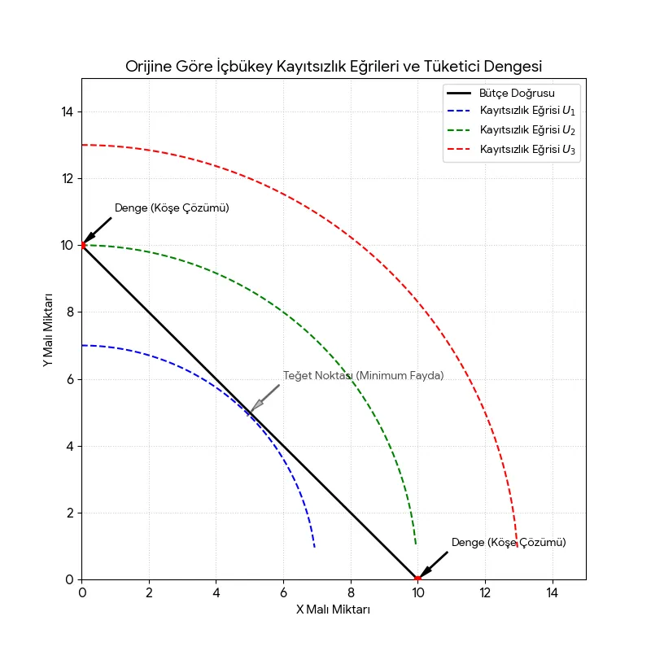
Örnek
Soru 1:
Bir tüketicinin fayda fonksiyonu \(U = 2X^{ 2 } + 3Y^{ 2 }\) şeklindedir. Tüketicinin bütçesi 120 TL, X malının fiyatı 4 TL ve Y malının fiyatı 2 TL’dir. Buna göre faydayı maksimize eden X ve Y nedir?
Çözüm :
Sadece X alırsa:
\[X = \frac{M}{P_{x}} = \frac{120}{4} = 30,\ \ Y = 0\]
Toplam Fayda: \(U = 2(30)^{2} + 3(0)^{2} = 2 \cdot 900 = 1800\text{ util}\)
Sadece Y alırsa:
\[X = 0,Y = \frac{M}{P_{y}} = \frac{120}{2} = 60\]
Toplam Fayda : \(U = 2(0)^{2} + 3(60)^{2} = 3 \cdot 3600 = 10.800\text{ util}\)
Karar: 10.800 > 1800 olduğu için tüketici tüm parasını Y malına harcar.
Sonuç: Y = 60 , X = 0
G. TÜKETİCİ DENGESİNİN DEĞİŞMESİ
Tüketici dengesinin değişimi için üç unsur vardır:
1. Malların Fiyatının Değişimi
-
Fiyat Değişimi ve Bütçe Doğrusu
-
Gelir (M) ve diğer malın fiyatı (Py) sabitken, X malının fiyatı (Px) düştüğünde, tüketicinin reel geliri artar ve bütçe doğrusunun X eksenini kestiği nokta sağa doğru kayar.
-
Fiyat düştüğünde bütçe doğrusu daha yatık hale gelir ve tüketici daha yüksek bir fayda düzeyini temsil eden yeni bir farksızlık eğrisi üzerinde yeni bir denge noktasına ulaşır.
-
Malın Cinsine Göre Örnekler:
-
Ekmek gibi zorunlu malla r: Fiyat düştüğünde tüketim çok az artabilir, artan para diğer mallara (Y malına) kaydırılabilir.
-
Eğlence/Giyim gibi lüks mallar : Fiyat düştüğünde tüketici bu mala olan talebini çok fazla artırabilir ve diğer mallardan (Y malından) vazgeçebilir.
-
İlaç (İnsülin) gibi tam zorunlu mallar : Fiyat ne kadar düşerse düşsün, tüketim miktarı reçeteye bağlı olarak sabit kalabilir; kalan bütçe tamamen diğer mallara yönlendirilir.
-
-
-
Fiyat Tüketim Eğrisi (FTE)
-
Tanım : Gelir ve diğer malın fiyatı sabitken, bir malın fiyatının sürekli değiştirilmesi sonucu elde edilen denge noktaları birleştiren eğriye Fiyat Tüketim Eğrisi denir.
-
Fiyat Tüketim Eğrisi, eksenlerde yer alan X ve Y mallarının miktarları arasındaki ilişkiyi gösterir.
-
Bu eğri üzerindeki her noktada; bütçenin tamamı harcanmıştır, fayda maksimumdur ve farksızlık eğrisi bütçe doğrusuna teğettir.
-
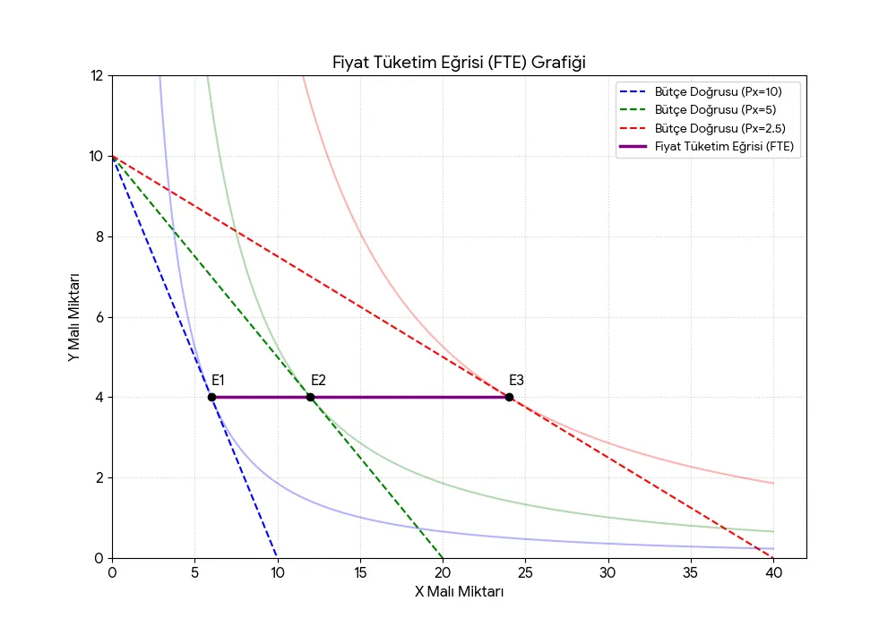
-
Bireysel Talep Eğrisi (BTE)
-
Fiyat Tüketim Eğrisi üzerindeki denge noktalarından (fiyat ve miktar çiftlerinden) hareketle Bireysel Talep Eğrisi türetilir.
-
Talep eğrisi, bir malın fiyatı ile o maldan talep edilen miktar arasındaki ilişkiyi gösterir.
-
Talep eğrisi elde edilirken; tüketicinin geliri, diğer malın fiyatı ve zevk/tercihiler sabit tutulur.
-
Fiyat düştükçe denge noktaları kayar, bu noktaların birleşimi Fiyat Tüketim Eğrisi'ni oluşturur ve bu eğri de bize malın talep eğrisini verir.
-
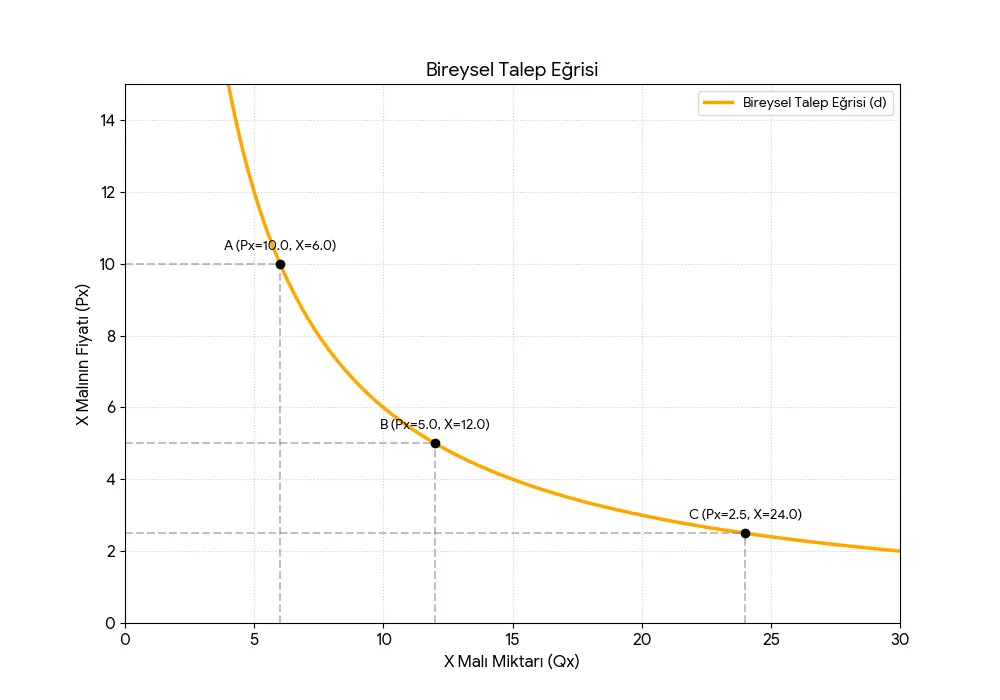
-
Sınavlar İçin Önemli Soru Tipleri ve Püf Noktalar
-
Fiyat Tüketim Eğrisi hangi değişkenleri gösterir?
-
Dengede tüketilen X ve Y malı miktarları arasındaki ilişkiyi.
-
-
Fiyat Tüketim Eğrisi üzerindeki noktalarda ne geçerlidir?
-
Bütçenin tamamı harcanmıştır, fayda maksimumdur ve marjinal ikame oranı (MRS) fiyatların oranına eşittir.
-
-
Bireysel Talep Eğrisi nasıl elde edilir?
-
Fiyat Tüketim Eğrisi yardımıyla.
-
-
Bireysel Talep Eğrisi hangi değişkenleri gösterir? Malın kendi fiyatı ile o maldan talep edilen miktar arasındaki ilişkiyi.
-
Talep eğrisi elde edilirken neler sabittir?
-
Tüketicinin geliri, diğer malların fiyatları ve zevk-tercihler sabittir; sadece ilgili malın fiyatı değişir.
-
-
2. Tüketicinin Gelirinin (Bütçenin) Değişimi
-
Gelir Değişiminin Tüketici Dengesi Üzerindeki Etkisi
-
Malların fiyatları (Px, Py) ve tüketicinin zevk/tercihlerinin sabit olduğu, ancak tüketicinin gelirinin (M) arttığı durum analiz edilmektedir.
-
Bütçe Doğrusu Hareketleri : Gelir arttığında bütçe doğrusu, eğimi değişmeden paralel bir şekilde sağa kayar.
-
Yeni Dengelerin Belirlenmesi: Yeni bütçe doğrusu üzerinde dengenin nerede oluşacağını, malların cinsi (normal veya düşük mal olması) belirler.
-
-
Gelir Tüketim Eğrisi (GTE)
-
Tüketicinin geliri değiştikçe ortaya çıkan yeni denge noktalarının birleştirilmesiyle elde edilen eğriye Gelir Tüketim Eğrisi denir.
-
Tanımı : Çeşitli gelir düzeylerinde faydayı maksimize eden mal bileşimlerinin geometrik yeridir.
-
Özellikleri : GTE üzerindeki her noktada tüketici faydasını maksimize eder, gelirin tamamını harcar ve marjinal ikame oranı (MRS) fiyatlar oranına (Px/Py) eşittir.
-
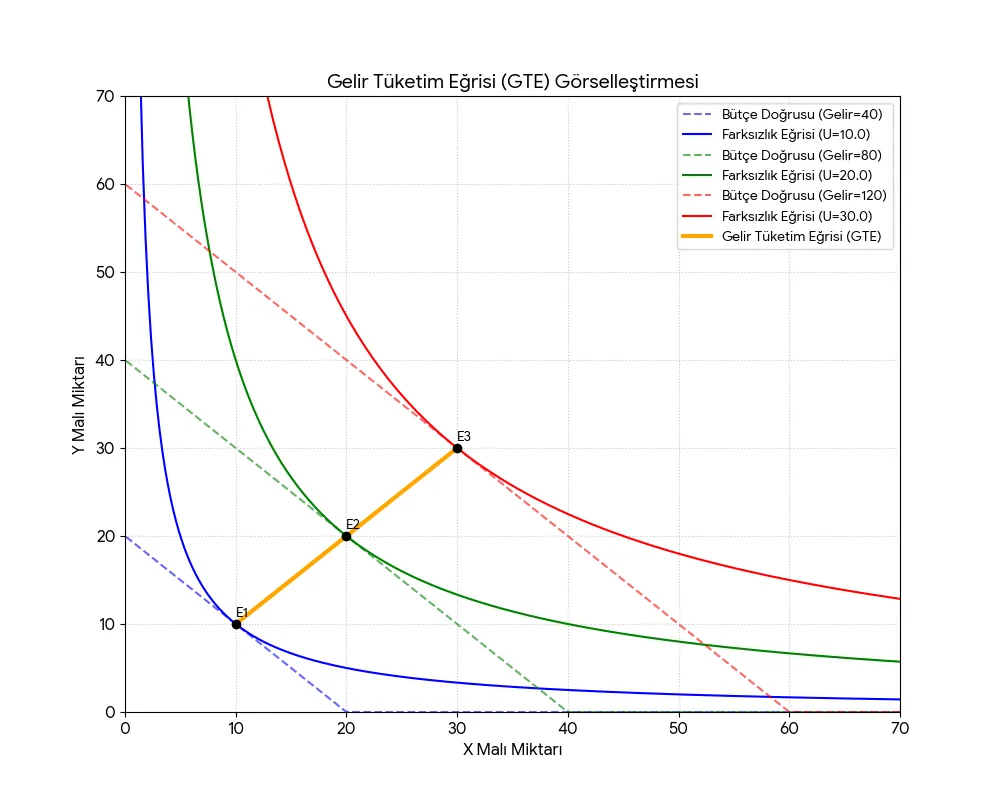
-
Engel Eğrisi
-
Gelir Tüketim Eğrisi'nden hareketle, gelirin miktarı ile talep edilen miktar arasındaki ilişkiyi gösteren eğriye Engel Eğrisi denir.
-
İktisatta arz ve talep eğrileri "ters" çizilirken, Engel eğrisinde dikey eksende miktar (Q), yatay eksende gelir (M) bulunur.
-
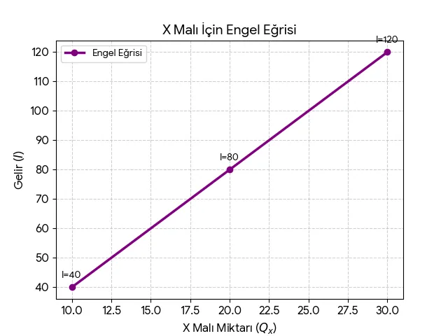
-
Mal Cinslerine Göre Engel Eğrisinin Biçimi : Grafiksel analizlerde malların türü eğrinin yönünü belirler:
-
Her İki Mal da Normal Mal İse : Gelir arttıkça her iki malın tüketimi de artacağı için Gelir Tüketim Eğrisi pozitif eğimli bir yol izler.
-
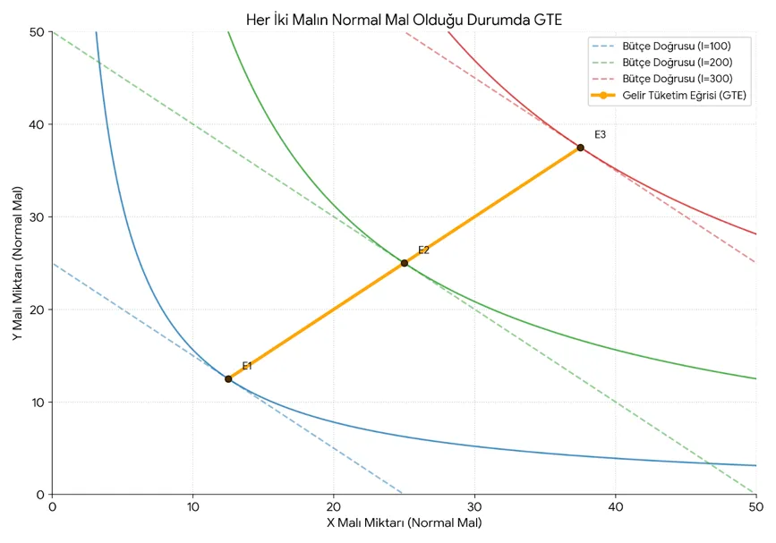
-
X Düşük, Y Normal Mal İse : Gelir arttığında tüketici X'ten daha az, Y'den daha fazla alır. Bu durumda GTE dikey eksene (Y malına) doğru bükülerek negatif eğimli olur.
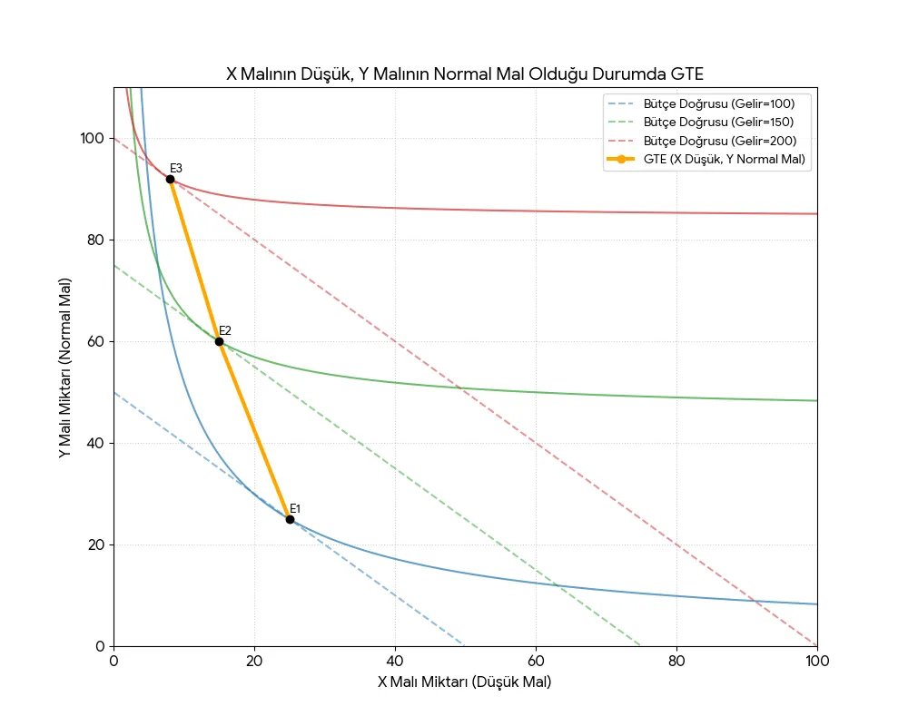
-
X Normal, Y Düşük Mal İse : Gelir arttığında X tüketimi artarken Y tüketimi azalır. GTE yatay eksene (X malına) doğru bükülür ve yine negatif eğimli olur.
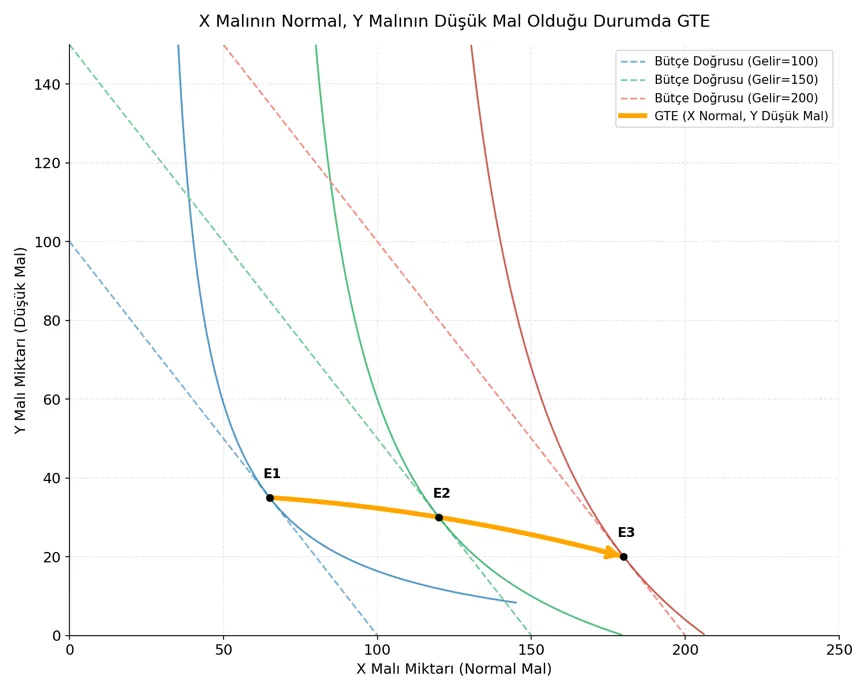
-
İki Mal Aynı Anda Düşük Mal Olamaz : İktisat teorisine göre, bir modeldeki tüm mallar (X ve Y) aynı anda düşük mal olamaz.
-
Neden : Tüketici geliri arttığında rasyonel davranarak bütçesinin tamamını harcamalıdır. Eğer her iki mal da düşük mal olsaydı, gelir arttığında her ikisinden de daha az alması gerekirdi. Bu durum, tüketicinin artan gelirini harcayacak bir yer bulamaması anlamına gelir ki bu da bütçe doğrusu üzerinde kalınmasını imkânsız kılar.
-
-
Sınavda Çıkabilecek Kritik Sorular
-
GTE üzerinde ne değişir?
-
Sadece gelir değişir; fiyatlar ve zevkler sabittir.
-
-
GTE hangi ilişkiyi gösterir?
-
İki malın (X ve Y) miktarları arasındaki ilişkiyi.
-
-
Engel eğrisi hangi ilişkiyi gösterir?
-
Gelir (M) ve miktar (Q) arasındaki ilişkiyi.
-
-
Soru 1:
Gelir Tüketim Eğrisi (GTE) pozitif eğimli ise ve gittikçe yatay eksene (X eksenine) yaklaşıyorsa, X ve Y malları hakkında ne söylenebilir?
Cevap :
Her iki mal da Normal (Üstün) Mal'dır.
Not: Öğrenciler eksene yaklaşmayı "düşük mal" olarak yorumlama hatasına düşer. Ancak eğim pozitif olduğu sürece, gelir arttığında her iki malın da tüketimi artıyor demektir. Sadece X malına olan talep artış hızı, Y malına göre daha yüksektir.
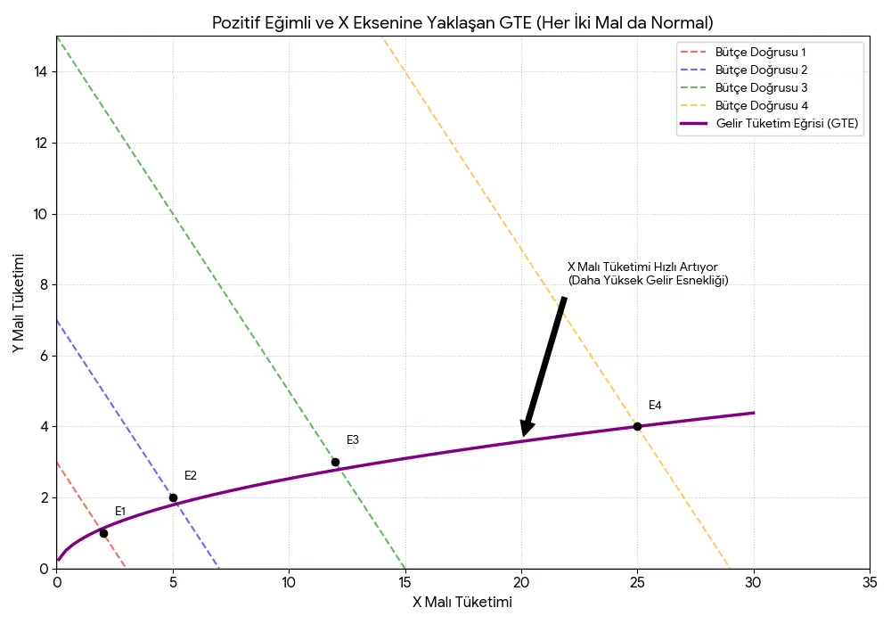
Soru 2:
X ve Y malları tam ikame mallar iken Marjinal İkame Oranı (MRS), fiyat oranından (Px/Py) büyükse (MRS>Px/Py), GTE'nin durumu nedir?
Cevap :
Farksızlık eğrileri bütçe doğrusundan daha dik olduğu için tüketici sadece X malı tüketir (köşe dengesi). Bu durumda gelir arttıkça yeni dengeler hep yatay eksen üzerinde oluşacağından, GTE yatay eksen (X ekseni) ile çakışıktır.
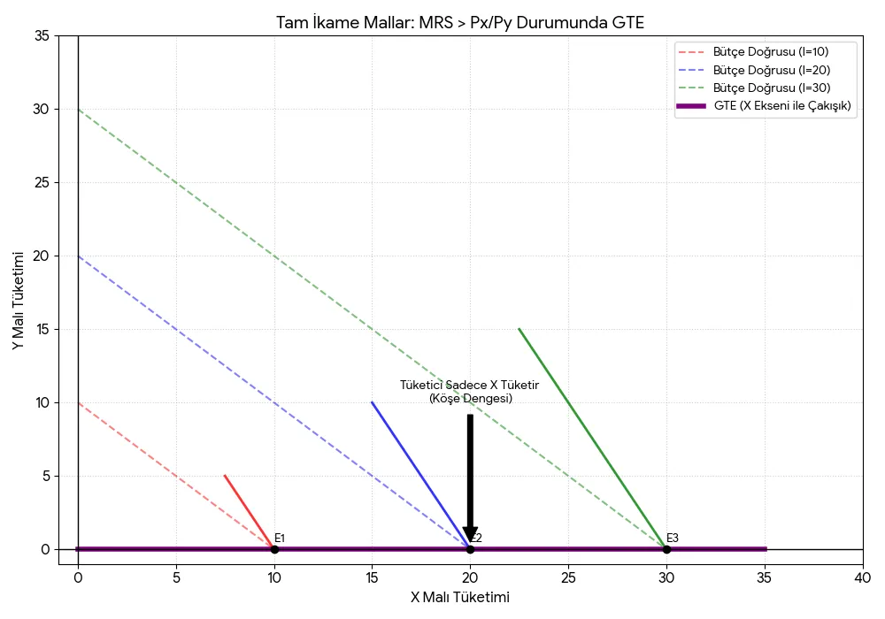
Soru 3:
Gelir Tüketim Eğrisi'nin dikey eksenle (Y ekseni) çakışık olduğu senaryolar nelerdir?
Cevap :
Bu durum tüketicinin sadece Y malı tükettiğini gösterir. Şu 3 durumda gerçekleşebilir:
Tam İkame: MRS<Px/Py ise.
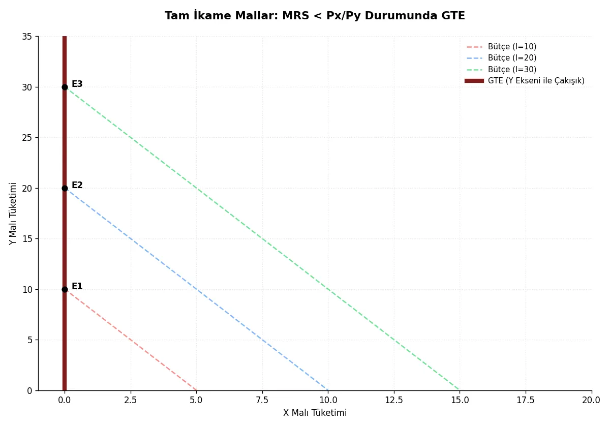
Orijine Göre İç Bükey Farksızlık Eğrileri : Tüketicinin uç tercihleri varsa (örneğin sadece kitap alıp hiç eroin almaması).
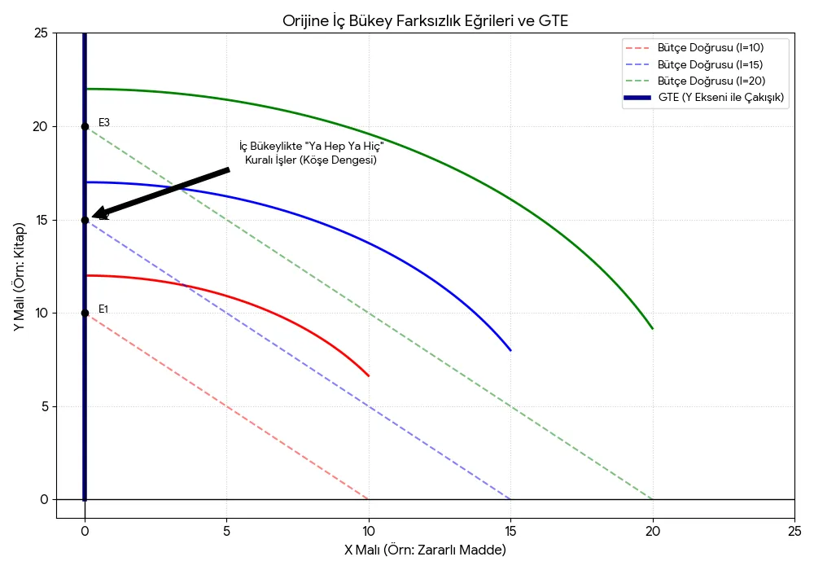
Yatay Farksızlık Eğrileri : Tüketici X malından hiç fayda sağlamıyorsa (vejetaryen birinin et yerine sadece sebze/Y malı tüketmesi).
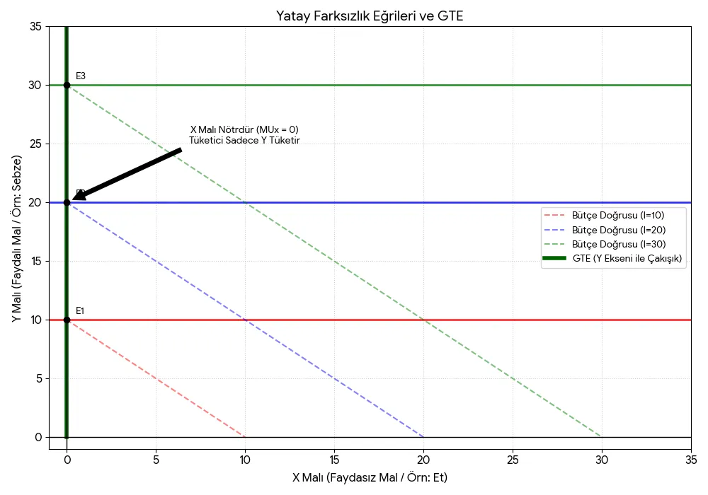
Soru 4:
Gelir Tüketim Eğrisi'nin kesinlikle pozitif eğimli olabilmesi için farksızlık eğrilerinin şekli nasıl olmalıdır?
Cevap :
Farksızlık eğrileri L şeklinde (Tam Tamamlayıcı Mallar) olmalıdır.
Neden: Sağ ve sol ayakkabı gibi mallarda, gelir arttığında birini artırıp diğerini sabit tutamazsınız; her iki malı da aynı oranda artırmak zorunda olduğunuz için denge noktaları hep dirseklerde oluşur ve GTE pozitif eğimli olur.
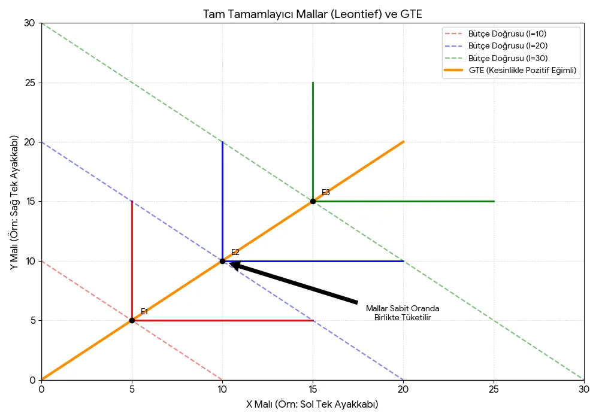
Soru 5:
Fayda fonksiyonu \(U = 4x^{ 1 \text{/} 4 }y^{ 1 \text{/} 2 }\) biçiminde olan bir tüketicinin; X malı fiyatı Px= 20 , Y malı fiyatı Py= 5 ise Gelir Tüketim Eğrisi denklemi nedir?
Cevap :
GTE üzerindeki her noktada denge koşulu \(\frac{MU_{x}}{MU_{y}} = \frac{P_{x}}{P_{y}}\ \) geçerlidir.
Marjinal Faydaları Bul:
\[MU_{x} = \frac{\partial U}{\partial x} = 4 \cdot \frac{1}{4}x^{- 3\text{/}4}y^{1\text{/}2} = x^{- 3\text{/}4}y^{1\text{/}2}\]
\[MU_{y} = \frac{\partial U}{\partial y} = 4 \cdot \frac{1}{2}x^{1\text{/}4}y^{- 1\text{/}2} = 2x^{1\text{/}4}y^{- 1\text{/}2}\]
Oranla ve Fiyatlara Eşitle:
\[\frac{x^{- 3\text{/}4}y^{1\text{/}2}}{2x^{1\text{/}4}y^{- 1\text{/}2}} = \frac{20}{5}\]
Üslü ifadeler düzenlendiğinde: \(\frac{y}{2x} = 4\)
Denklemi Çöz:
\(y\ = \ 8x\) (Gelir Tüketim Eğrisi Denklemi)
3. Zevk ve Tercihlerin (Farksızlık Eğrisinin) Değişimi
-
Koşul : Gelir ve fiyatlar sabitken (ceteris paribus), zevkler ve tercihler X malı lehine değişsin.
-
Sonuç: Farksızlık haritası hangi mal tercih ediliyorsa o eksene yaklaşır. Zevkler X lehine değişirse, farksızlık eğrileri bütçe doğrusu üzerinde aşağı doğru kayarak X eksenine yaklaşır
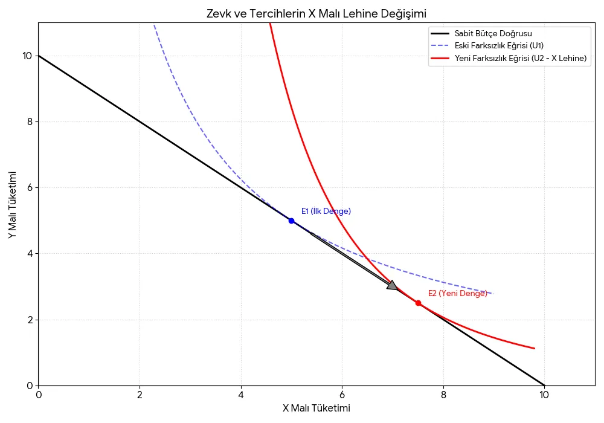
H. FİYAT DEĞİŞİMİNİN YARATTIĞI ETKİ
1. Temel Kavramlar ve Giriş
-
Fiyat ve Talep İlişkisi : Genel olarak bir malın fiyatı arttığında talep edilen miktar azalır (Giffen mallar hariç). Bu azalışın nedenleri "İkame Etkisi" ve "Gelir Etkisi" olarak ikiye ayrılır.
-
Etki Kavramı : İktisatta bir "etki"den bahsediliyorsa, bu durum fiyat (P) ve miktar (Q) arasındaki ilişkiyi inceler. Ancak toplam etkiden bahsediyorsak bu malların tanımıyla ilgidir.
-
Negatif Etki : Fiyat ile miktarın ters yönlü hareket etmesidir (P artarsa Q azalır).
-
Pozitif Etki : Fiyat ile miktarın aynı yönlü hareket etmesidir (P artarsa Q artar).
-
2. İkame Etkisi
-
Tanım : Bir malın fiyatı arttığında, tüketicinin o mal yerine daha ucuz olan başka malları tercih etmesi nedeniyle talebin azalmasıdır.
-
Genel Kural : Malın türü ne olursa olsun (normal, düşük veya giffen mal), ikame etkisi her zaman negatiftir. Yani fiyat artarsa, ikame etkisi miktar üzerinde her zaman azaltıcı bir rol oynar.
-
Telafi Edilmiş Talep Eğrisi (Hicksian): Sadece ikame etkisini yansıtan bu eğri, tüm mal gruplarında negatif eğimlidir.
3. Gelir Etkisi
-
Tanım : Bir malın fiyatı değiştiğinde tüketicinin reel gelirinin (satın alma gücünün) değişmesi ve bunun talebe yansımasıdır.
-
Reel Gelir (M/P): Fiyatlar arttığında tüketicinin reel geliri azalır ve kendini daha "fakir" hisseder.
-
Mal Türüne Göre Değişkenlik : Gelir etkisi, ikame etkisinin aksine malın türüne göre farklılık gösterir:
-
Normal Mallar: Gelir etkisi negatiftir (Fiyat artar ⇒ Reel gelir düşer ⇒ Talep düşer).
-
Düşük Mallar : Gelir etkisi pozitiftir (Fiyat düşer ⇒ Reel gelir artar ⇒ Tüketici daha kaliteli mallara yöneldiği için düşük mala talep düşer).
-
4. Toplam Etki (Fiyat Etkisi)
-
Tanım: Bir malın türü bize toplam etkinin eğiminin yönünü vermektedir .
-
Formül : Toplam Etki (Fiyat Etkisi) = İkame Etkisi + Gelir Etkisi.
-
Alışılmış (Ordinary/Marshallian) Talep Eğrisi : Toplam etkiyi yansıtan eğridir. Mal gruplarında eğrisinin negatif ya da pozitif olduğunu bilemeyiz.
5. Normal Mallar İçin Analiz
-
Normal Mal Tanımları:
-
Fiyat arttığında talebin azaldığı ya da fiyat azalmasıyla talebin arttığı mallar.
-
Gelir arttıkça talebin arttığı ya da gelir azaldığında talebin azaldığı mallardı.
-
-
Normal mallarda hem ikame etkisi hem de gelir etkisi aynı yönde (negatif) çalışır.
-
Fiyat Artışı Durumunda:
-
İkame Etkisi : Negatif (Miktar azalır).
-
Gelir Etkisi : Negatif (Reel gelir düştüğü için miktar azalır).
-
Sonuç: Toplam etki negatiftir ve miktar belirgin şekilde azalır.
-
-
Grafiksel Karşılaştırma : Normal mallarda Alışılmış Talep Eğrisi (ATE), Telafi Edilmiş Talep Eğrisi'ne (TETE) göre daha yatıktır (daha esnektir).
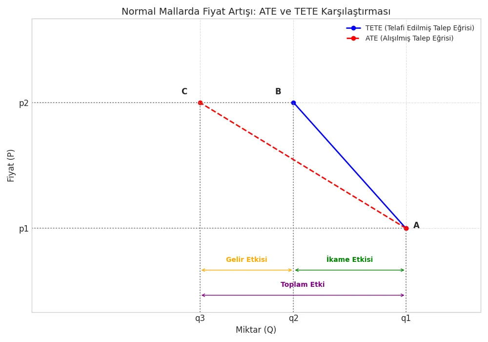
6. Düşük Mallar İçin Analiz:
Düşük mallar, gelir arttığında talebi azalan mallardır. Kendi içinde "Giffen olmayan" ve "Giffen" mallar olarak ikiye ayrılır.
-
Giffen Olmayan Düşük Mallar (Fiyat Artışı Senaryosu)
-
İkame Etkisi : Negatiftir (Fiyat ↑, Talep ↓).
-
Gelir Etkisi : Fiyat artışı reel geliri azaltır; düşük mal olduğu için talep artar. Fiyat ve miktar aynı yönlü olduğundan etkisi pozitiftir.
-
Toplam Etki: Negatiftir çünkü ikame etkisi, gelir etkisinden daha baskındır. Sonuç olarak fiyat artınca talep azalır.
-
Eğriler : İkame etkisi toplam etkiden büyük olduğu için TETE, ATE'den daha yatıktır.
-
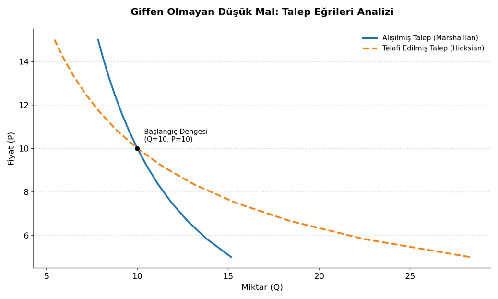
-
Giffen Malları (Fiyat Artışı Senaryosu)
-
İkame Etkisi : Her zaman negatiftir (Fiyat ↑, Talep ↓).
-
Gelir Etkisi: Pozitiftir ve oldukça güçlüdür.
-
Toplam Etki: Pozitiftir çünkü gelir etkisi ikame etkisini yener. Yani Giffen malın fiyatı arttığında talep miktarı da artar.
-
Eğriler : Alışılmış Talep Eğrisi (ATE) bu mallarda pozitif eğimlidir.
-
7. Tüm Mal Türleri İçin Tablo
| İkame Etkisi | Gelir Etkisi | Toplam Etki | TETE | ATE | |
|---|---|---|---|---|---|
| Normal Mal | (-) | (-) | (-) | (-) | (-) |
| Düşük Mal | (-) | (+) | (?) | (-) | (?) |
| Gıffen Olmayan Mal | (-) | (+) | (-) | (-) | (-) |
| Gıffen Mal | (-) | (+) | (+) | (-) | (+) |
| Çay | (-) | (?) | (?) | (-) | (?) |
8. Hicks ve Slutsky Analizi
-
Hicks Analizi
J.R. Hicks tarafından geliştirilen bu analiz, "Ordinal Fayda Kuramı"na dayanır ve ikame etkisini ölçerken tüketici refahını (faydasını) merkeze alır.
-
Reel Gelir Tanımı : Hicks’e göre reel gelir, tüketicinin ulaştığı fayda (tatmin) düzeyidir.
-
İşleyiş Mekanizması : Fiyat düşüşü sonucu tüketicinin artan satın alma gücü, hayali bir vergiyle (Telafi Edici Varyasyon) elinden alınır. Tüketici, başlangıçtaki (eski) kayıtsızlık eğrisi üzerinde tutulur.
-
Grafiksel Özellik : Yeni fiyat oranına (yeni bütçe doğrusuna) paralel, ancak eski kayıtsızlık eğrisine teğet olan hayali bir bütçe doğrusu çizilir.
-
İkame Etkisi : Aynı kayıtsızlık eğrisi üzerindeki hareketle sınırlıdır. Bu süreçte fayda sabit kalırken, sadece mal sepetindeki bileşim değişir.
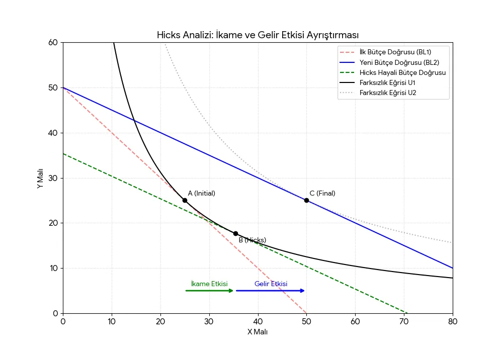
-
Slutsky Analizi (Slutsky Yaklaşımı)
Slutsky tarafından geliştirilen bu yaklaşım, fayda gibi ölçülmesi zor bir kavram yerine, gözlemlenebilir olan satın alma gücünü temel alır.
-
Reel Gelir Tanımı : Slutsky’ye göre reel gelir, tüketicinin fiyat değişiminden önceki aynı mal sepetini (başlangıç bileşimini) alabilme yeteneğidir.
-
İşleyiş Mekanizması : Fiyat değişimi sonrası çizilen hayali bütçe doğrusu, tüketicinin eski denge noktasından (ilk sepetinden) geçecek şekilde kurgulanır.
-
Grafiksel Özellik : Hayali bütçe doğrusu, orijinal denge noktasından geçtiği için tüketiciye daha yüksek bir kayıtsızlık eğrisine geçme imkânı tanır.
-
İkame Etkisi : Slutsky analizinde ikame etkisi hesaplanırken tüketici genellikle daha yüksek bir fayda düzeyine ulaşır.
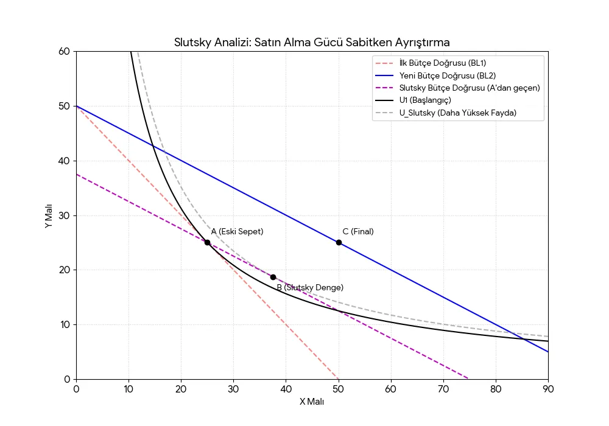
-
Hicks vs. Slutsky: Karşılaştırmalı Özet
| Kriter | Hicks Analizi | Slutsky Analizi |
|---|---|---|
| Sabit Tutulan Değişken | Fayda Düzeyi (U) | Satın Alma Gücü (Sepet) |
| Reel Gelir Yaklaşımı | Psikolojik / Öznel (Fayda) | Matematiksel / Nesnel (Maliyet) |
| Kayıtsızlık Eğrisi | Eski kayıtsızlık eğrisi üzerinde kalınır. | Daha yüksek bir kayıtsızlık eğrisine geçilebilir. |
| Analiz Yöntemi | Yeni bütçe doğrusu eski eğriye teğet geçer. | Yeni bütçe doğrusu eski denge noktasından geçer. |
| İkame Etkisi Şiddeti | Slutsky'ye göre daha küçüktür. | Hicks'e göre daha büyüktür. |
I. ARZ VE TALEP
1. TALEP
-
Talebin Tanımı ve Şartları
Talep, sadece bir şeyi istemek değildir. İktisadi anlamda talep olabilmesi için şu şartların bir arada olması gerekir:
-
Ceteris Paribus: "Diğer tüm değişkenler sabitken" varsayımı altında incelenir.
-
Satın Alma İsteği ve Yeteneği: Bir malı sadece istemek yetmez; cebinizde o isteği destekleyecek paranın (satın alma gücünün) da olması gerekir.
-
Talep Fiyatı: Tüketicinin bir mal için ödemeye razı olduğu maksimum fiyattır. Eğer piyasa fiyatı bu sınırın üzerindeyse talep oluşmaz.
-
Talep Yasası (Kanunu)
Talep yasası, bir malın fiyatı ile o maldan talep edilen miktar arasındaki ters yönlü ilişkiyi ifade eder. Yani, bir malın fiyatı arttığında o maldan talep edilen miktar azalır. Bu ters yönlü ilişkinin üç temel nedeni vardır:
-
İkame Etkisi: Malın fiyatı artınca tüketicinin daha ucuz olan benzer mallara yönelmesi.
-
Gelir Etkisi: Malın fiyatı artınca tüketicinin reel alım gücünün düşmesi.
-
Azalan Marjinal Fayda Yasası: Tüketilen her ek birimin sağladığı faydanın azalması.
-
Su-Elmas Paradoksu ve Marjinal Fayda
Adam Smith'in ortaya attığı, Alfred Marshall'ın çözdüğü bu paradoksla malın değeri açıklanır:
-
Adam Smith : Suyun kullanım değeri (faydası) çok yüksek ama fiyatı düşük; elmasın kullanım değeri düşük ama fiyatı neden çok yüksek diye sormuştur.
-
Marshall'ın Çözümü : Değeri belirleyen şey toplam fayda değil, marjinal faydadır. Suyu çok tükettiğimiz için son biriminin faydası (marjinal fayda) düşüktür, bu yüzden fiyatı da düşüktür. Elması az tükettiğimiz için marjinal faydası ve dolayısıyla fiyatı yüksektir.
-
Önemli Not: Bir malın marjinal fayda eğrisi ( \(MU\) ), aynı zamanda o malın talep eğrisidir \(P = MU\) .
-
Talep Fonksiyonu ve Eğrisinin Çizimi
-
Marjinal Faydanın \(\mathbf{(MU)}\) Türetilmesi
-
Tüketicinin bir maldan elde ettiği toplam fayda \((TU)\) , o malın tüketim miktarına \((q)\) bağlıdır. Tüketilen her bir birim malın toplam faydada yarattığı değişim, yani fonksiyonun türevi bize Marjinal Faydayı verir.
\[\mathbf{MU}\mathbf{=}\frac{\mathbf{dTU}}{\mathbf{dq}}\]
-
Marshallcı Denge Koşulu \(\mathbf{(P = MU)}\)
Tüketici, rasyonel bir birey olarak bir malın son birimine, o birimin kendisine sağladığı ek tatmin (marjinal fayda) kadar bedel ödemek ister. Bu nedenle, piyasada oluşacak fiyatın marjinal faydaya eşit olduğu varsayılır:
\[P = MU\]
-
Fonksiyonel Dönüşüm
Bu aşamada karşımıza iki tür gösterim çıkar:
-
Ters Talep Fonksiyonu : Fiyatın miktara bağlı olarak ifade edilmesidir ( \(P = f(q)\) ). Marshall'ın Ÿ eşitliğinden doğrudan elde edilen form budur.
-
Talep Fonksiyonu : Miktarın fiyata bağlı olarak ifade edilmesidir ( \(q = f(P)\) ). Grafik çizildikten sonra matematiksel olarak miktarın yalnız bırakılmasıyla elde edilir.
-
Grafiksel Gösterim
Talep eğrisi, Azalan Marjinal Fayda Yasası nedeniyle negatif eğimlidir.
-
Dikey Eksen \(\mathbf{(P)}\) : Tüketicinin hiç tüketim yapmadığı noktada ödemeye razı olduğu en yüksek fiyatı (rezervasyon fiyatı) gösterir.
-
Yatay Eksen \(\mathbf{(q)}\) : Malın fiyatı sıfır olduğunda (bedava olduğunda) tüketicinin ulaştığı Doyum Noktasını \((MU = 0)\ \) gösterir.
-
Eğim : Eğrinin aşağı doğru eğimli olması, fiyat düştükçe talep edilen miktarın arttığını (Talep Yasası) simgeler.
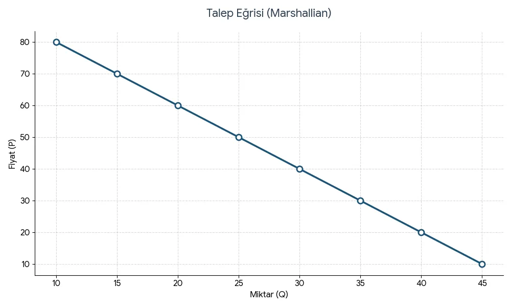
-
Talebi ve Talep Miktarını Etkileyen Faktörler
"Talep miktarının değişmesi" ile "talebin değişmesi" arasında fark vardır
-
Malın Kendi Fiyatı : Sadece talep edilen miktarı değiştirir. Fiyat değiştiğinde talep eğrisi üzerinde hareket edilir.
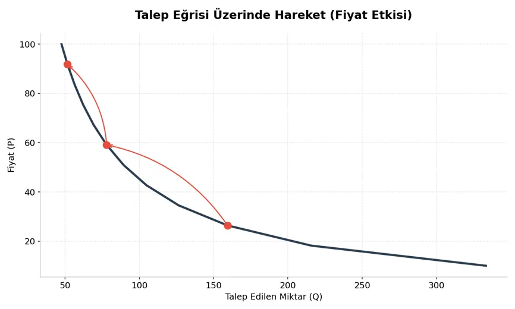
-
Gelir (Talebi Değiştirir):
-
Normal Mallar : Gelir arttığında talebi artan (eğri sağa kayar) mallardır.
-
Düşük Mallar : Gelir arttığında talebi azalan (eğri sola kayar) mallardır.
-
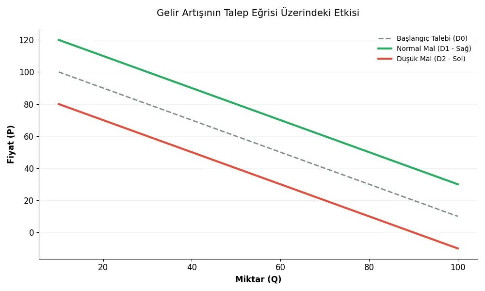
-
İlgili Malların Fiyatları:
-
İkame Mallar : Kahve fiyatı artarsa, çaya olan talep artar (sağa kayar).
-
Tamamlayıcı Mallar: Benzin fiyatı artarsa, otomobile olan talep azalır (sola kayar).
-
-
Beklentiler : Gelecekte fiyatların artacağı beklentisi, bugünkü talebi artırır.
-
Zevk ve Tercihler : Bir malın moda olması veya lehine değişen tercihler talebi artırır.
-
Alıcı Sayısı (Nüfus): Pazar talebini etkiler; alıcı sayısı arttıkça piyasa talebi artar.